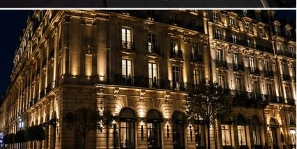

Cabinet parisien de développement, synergies et partenariats



Fondé à Paris, SYNERA intervient dans la conception, le développement et la structuration de projets impliquant des entreprises, des marques, des prestataires, des organisateurs et des acteurs économiques issus d'univers complémentaires.
Le cabinet accompagne des initiatives de nature variée, depuis les opérations événementielles jusqu'au développement de partenariats stratégiques, en passant par l'identification d'opportunités de collaboration et la coordination de projets transverses.
Chaque mission fait l'objet d'une approche sur mesure, fondée sur la compréhension des enjeux, la pertinence des interlocuteurs mobilisés et la cohérence globale du projet.
SYNERA est né d'une conviction simple : les projets les plus ambitieux nécessitent souvent la convergence de compétences, d'expertises et d'acteurs complémentaires.
Le cabinet intervient comme partenaire de réflexion, de coordination et de structuration auprès de ses clients.
Au fil de ses missions, SYNERA a développé des relations professionnelles durables avec des acteurs issus de secteurs variés : événementiel, hôtellerie, lieux de réception, restauration, transport, production, communication, animation, marques, organisateurs de salons, prestataires techniques et services spécialisés.
Cette diversité permet au cabinet d'intervenir sur des projets aux formats et aux ambitions multiples.
Qu'il s'agisse de l'organisation d'un événement, du développement d'un salon professionnel, de la recherche de partenaires, de la création d'expériences sur mesure, de l'identification de prestataires spécifiques ou de la mise en œuvre d'un concept particulier, le cabinet mobilise les ressources adaptées à chaque mission.
Parce que les enjeux diffèrent d'un projet à l'autre, SYNERA privilégie une approche fondée sur la pertinence des interlocuteurs, la qualité de l'exécution et la cohérence globale des collaborations mises en place.
Cette capacité à réunir des expertises complémentaires permet d'apporter des réponses concrètes à des besoins simples comme à des projets plus singuliers.
Identification, structuration et développement de collaborations professionnelles adaptées aux objectifs de chaque projet.
Accompagnement de projets événementiels privés et professionnels, de leur conception à leur mise en œuvre.
Développement de synergies entre organisateurs, exposants, partenaires et intervenants.
Création d'opportunités de collaboration et d'activations adaptées à l'identité et aux ambitions des marques.
Accompagnement de projets en phase de réflexion, de lancement ou de développement.
Conception et coordination de rencontres favorisant les échanges, les collaborations et les opportunités d'affaires.
Chaque mission confiée à SYNERA fait l'objet d'un suivi dédié et d'une mobilisation adaptée à ses enjeux.
Selon la nature du projet, le cabinet coordonne les différents intervenants nécessaires à sa réalisation et assure les démarches de prospection, de recherche, de mise en relation, de négociation et de suivi auprès des partenaires concernés.
Cette organisation permet à ses clients de se concentrer pleinement sur le développement de leur activité tout en bénéficiant d'un accompagnement structuré et d'un pilotage rigoureux des actions engagées.
De l'identification des opportunités à leur concrétisation, SYNERA assure le suivi des démarches nécessaires à l'avancement des projets qui lui sont confiés.
Chaque projet possède ses propres enjeux.
Chaque collaboration répond à des objectifs spécifiques.
Le rôle du cabinet consiste à réunir les expertises, les partenaires et les ressources nécessaires à la bonne conduite des missions qui lui sont confiées.
Cette approche permet d'intervenir sur des projets de tailles et de secteurs variés tout en conservant une exigence constante dans leur exécution.
Implanté dans le 17ᵉ arrondissement de Paris, SYNERA évolue au sein d'un environnement où se rencontrent entreprises, marques, institutions, prestataires et organisateurs.
Cette proximité favorise une compréhension fine des enjeux du marché et une capacité d'intervention adaptée à des projets d'envergures diverses.
📍 Avenue de Wagram
75017 Paris • France
SYNERA
Cabinet parisien de développement, synergies et partenariats
cabinetsyneraparis@gmail.com
06 36 39 78 56
Avenue de Wagram • 75017 Paris